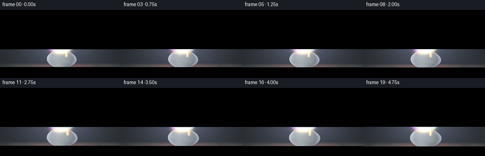
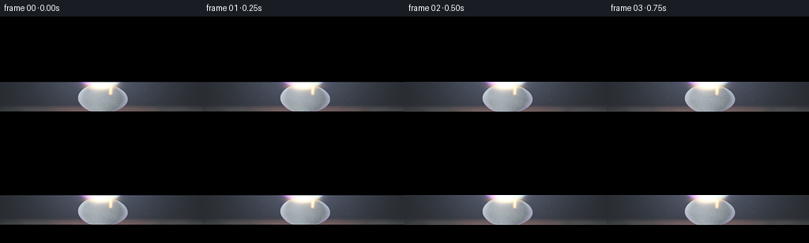
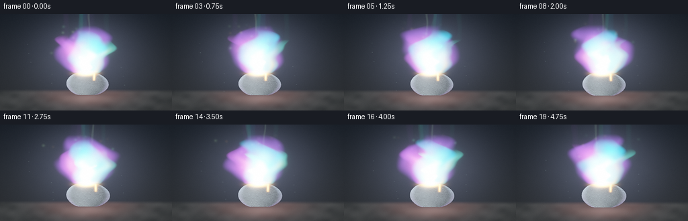
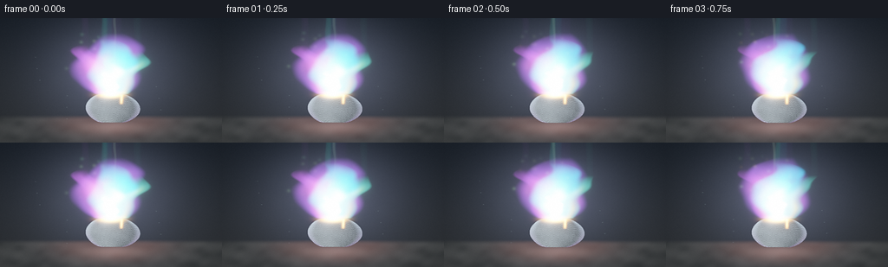
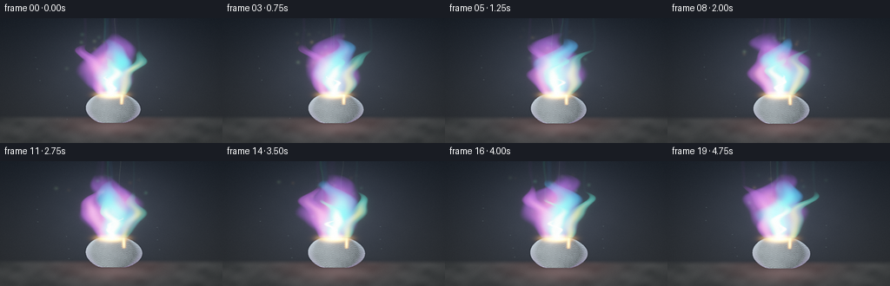
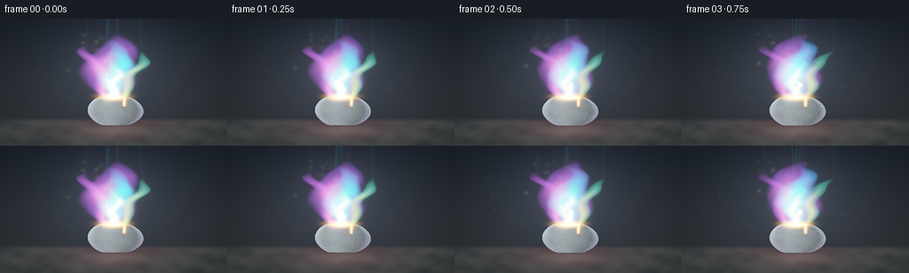
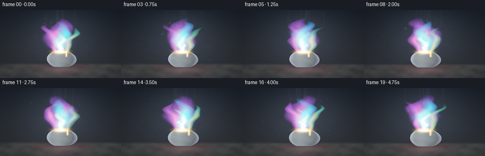
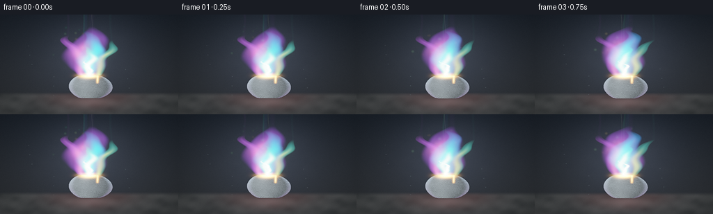

CODING AGENTS AS PIXEL WORLD MODELS
traex/DeepSeek-V4.1-Flash · material_0012
点击播放 · 原生 RGB 像素
逐轮保存的候选
回放视频、检查图与代码变化。
每份候选均可单独播放。实际图片检查记录在下方工具轨迹中。
候选 01播放与检查图
点击播放 · 原生 RGB 像素


展开代码变化
--- 上一保存版本
+++ 本次保存版本
@@ -0,0 +1,376 @@
+"""Procedural render of a steadily burning piece of lead."""
+
+from pathlib import Path
+
+import numpy as np
+from PIL import Image, ImageFilter
+from scipy.ndimage import gaussian_filter
+
+import artifact_io
+
+
+WIDTH = 256
+HEIGHT = 144
+FRAMES = 20
+FPS = 4.0
+SS = 3
+RW = WIDTH * SS
+RH = HEIGHT * SS
+
+CASE_DIR = Path(__file__).resolve().parent
+
+
+def smoothstep(edge0, edge1, value):
+ x = np.clip((value - edge0) / (edge1 - edge0), 0.0, 1.0)
+ return x * x * (3.0 - 2.0 * x)
+
+
+def mix(a, b, amount):
+ amount = np.asarray(amount)[..., None] if np.ndim(amount) else amount
+ return a * (1.0 - amount) + b * amount
+
+
+def rgb(hex_color):
+ value = hex_color.lstrip("#")
+ return np.array([int(value[i:i + 2], 16) for i in (0, 2, 4)], dtype=np.float32) / 255.0
+
+
+def low_noise(x, y, t, seed):
+ """Smooth, slightly directional noise for flame silhouette and smoke."""
+ return (
+ 0.44 * np.sin(8.2 * x + 3.1 * y - 1.35 * t + seed)
+ + 0.31 * np.sin(-4.7 * x + 9.3 * y + 0.92 * t + 1.73 * seed)
+ + 0.18 * np.sin(15.4 * x - 6.2 * y + 2.1 * t + 0.4 + seed)
+ + 0.12 * np.sin(22.0 * x + 13.0 * y - 3.3 * t + 2.4 * seed)
+ )
+
+
+def fine_noise(x, y, t, seed):
+ return (
+ 0.34 * np.sin(31.0 * x + 9.0 * y - 3.4 * t + seed)
+ + 0.26 * np.sin(-19.0 * x + 24.0 * y + 4.3 * t + 2.1 * seed)
+ + 0.20 * np.sin(46.0 * x - 17.0 * y + 2.7 * t + 1.2 * seed)
+ + 0.12 * np.sin(63.0 * x + 29.0 * y - 5.1 * t + 0.5 * seed)
+ )
+
+
+def flame_layer(x, y, t, cfg):
+ base = cfg["base"]
+ height = cfg["height"]
+ y0 = (base - y) / height
+ vertical = np.clip(y0, 0.0, 1.0)
+
+ broad = low_noise(x * 1.7, y * 2.3, t, cfg["seed"])
+ fine = fine_noise(x, y, t, cfg["seed"] + 1.7)
+ sway = (
+ cfg["lean"] * vertical ** 1.35
+ + (0.030 + 0.018 * cfg["wobble"]) * np.sin(7.0 * vertical - 1.55 * t + cfg["seed"]) * vertical
+ + 0.014 * np.sin(15.0 * vertical + 0.85 * t + 1.9 * cfg["seed"]) * vertical
+ )
+ center = cfg["cx"] + sway + 0.007 * broad * vertical
+
+ width_env = cfg["width"] * (
+ 0.34
+ + 0.88 * np.sin(np.pi * np.clip(vertical, 0.0, 1.0)) ** 0.68
+ ) * (1.0 - 0.22 * vertical)
+ dx = (x - center) / np.maximum(width_env, 1e-4)
+
+ # The low-frequency warp makes licking tongues; the fine term breaks up the edge.
+ warped = np.abs(dx) + (0.105 + 0.10 * vertical) * broad + 0.038 * fine
+ body = 1.0 - smoothstep(0.63, 1.03, warped)
+ roots = smoothstep(0.0, 0.055, vertical)
+ crown = 1.0 - smoothstep(0.73, 1.02, vertical)
+ envelope = roots * crown
+
+ inner = np.exp(-1.65 * np.square(dx / (0.62 + 0.10 * broad)))
+ alpha = cfg["strength"] * body * envelope * (0.66 + 0.34 * inner)
+ alpha *= np.clip(0.88 + 0.18 * fine, 0.62, 1.0)
+ alpha = np.clip(alpha, 0.0, 1.0)
+
+ core = np.exp(-3.8 * np.square(dx)) * roots * (1.0 - smoothstep(0.42, 0.86, vertical))
+ color = mix(cfg["edge"], cfg["hot"], np.clip(core * 1.35, 0.0, 1.0))
+ intensity = cfg["intensity"] * (0.68 + 0.60 * core) * (0.88 + 0.12 * fine)
+ return alpha, color, np.maximum(intensity, 0.0)
+
+
+def add_point_light(target, x, y, radius, color):
+ """Add one small antialiased glow without evaluating the whole frame."""
+ px = int(round(x * RW))
+ py = int(round(y * RH))
+ pr = max(2, int(np.ceil(radius * RW * 3.0)))
+ x0, x1 = max(0, px - pr), min(RW, px + pr + 1)
+ y0, y1 = max(0, py - pr), min(RH, py + pr + 1)
+ if x0 >= x1 or y0 >= y1:
+ return
+ yy, xx = np.mgrid[y0:y1, x0:x1]
+ falloff = np.exp(
+ -((xx / RW - x) ** 2 + (yy / RH - y) ** 2) / (2.0 * radius * radius)
+ )
+ target[y0:y1, x0:x1] += falloff[..., None] * color
+
+
+def make_particles():
+ rng = np.random.default_rng(3817)
+ count = 42
+ return {
+ "phase": rng.uniform(0.0, 1.0, count),
+ "speed": rng.uniform(0.075, 0.19, count),
+ "spread": rng.normal(0.0, 0.072, count),
+ "drift": rng.normal(0.0, 0.018, count),
+ "size": rng.uniform(0.0012, 0.0036, count),
+ "hue": rng.uniform(0.0, 1.0, count),
+ "twinkle": rng.uniform(0.0, np.pi * 2.0, count),
+ }
+
+
+PARTICLES = make_particles()
+
+
+def render_frame(index):
+ t = index / FPS
+ yy, xx = np.mgrid[0:RH, 0:RW].astype(np.float32)
+ raw_x = xx / (RW - 1)
+ raw_y = yy / (RH - 1)
+
+ # Very slow push-in with a breath of lateral drift.
+ zoom = 1.0 + 0.013 * t
+ x = 0.5 + (raw_x - 0.5 - 0.003 * np.sin(0.55 * t)) / zoom
+ y = 0.5 + (raw_y - 0.5) / zoom
+
+ upper = np.clip(y, 0.0, 1.0)
+ background = mix(
+ np.array([0.006, 0.010, 0.017], dtype=np.float32),
+ np.array([0.020, 0.023, 0.027], dtype=np.float32),
+ upper,
+ )
+ background += 0.006 * np.exp(
+ -((x - 0.50) ** 2 / 0.22**2 + (y - 0.51) ** 2 / 0.34**2)
+ )[..., None] * np.array([0.35, 0.46, 0.62], dtype=np.float32)
+
+ # Rough slate floor and the soft light it catches from the flame.
+ floor = smoothstep(0.775, 0.825, y)
+ stone = low_noise(x * 2.1, y * 5.4, t * 0.09, 4.2)
+ stone_fine = fine_noise(x * 1.7, y * 2.2, 0.0, 8.8)
+ floor_color = (
+ np.array([0.040, 0.044, 0.046], dtype=np.float32)
+ + (0.012 * stone + 0.007 * stone_fine)[..., None]
+ )
+ background = mix(background, floor_color, floor)
+ floor_glow = (
+ np.exp(-((x - 0.505) ** 2 / 0.19**2 + (y - 0.825) ** 2 / 0.105**2))
+ * floor
+ )
+ background += floor_glow[..., None] * np.array([0.22, 0.10, 0.075], dtype=np.float32)
+
+ # Dark, slowly turning smoke behind the flame.
+ smoke_y = np.clip((y - 0.04) / 0.70, 0.0, 1.0)
+ smoke_x = (x - 0.50) / (0.10 + 0.22 * smoke_y)
+ smoke_n = low_noise(x * 2.0, y * 1.45, t * 0.40, 5.7)
+ smoke_n2 = fine_noise(x * 1.2, y * 1.8, t * 0.24, 2.9)
+ smoke_shape = np.exp(-0.72 * np.square(smoke_x + 0.17 * smoke_n * smoke_y))
+ smoke_shape *= smoothstep(0.02, 0.24, y) * (1.0 - smoothstep(0.48, 0.79, y))
+ smoke_alpha = np.clip(0.075 * smoke_shape * (0.72 + 0.38 * smoke_n2), 0.0, 0.11)
+ smoke_color = np.array([0.085, 0.094, 0.108], dtype=np.float32)
+ background = background * (1.0 - smoke_alpha[..., None]) + smoke_color * smoke_alpha[..., None]
+
+ # Contact shadow and a faint reflection under the lead.
+ shadow = np.exp(
+ -((x - 0.505) ** 2 / 0.17**2 + (y - 0.825) ** 2 / 0.045**2)
+ )
+ background *= (1.0 - 0.68 * shadow)[..., None]
+ reflection = np.exp(
+ -((x - 0.505) ** 2 / 0.075**2 + (y - 0.845) ** 2 / 0.065**2)
+ ) * smoothstep(0.80, 0.86, y)
+ background += reflection[..., None] * np.array([0.075, 0.050, 0.050], dtype=np.float32)
+
+ scene = background.copy()
+ emission = np.zeros((RH, RW, 3), dtype=np.float32)
+
+ # The lead shard: a rough, tapered metallic chunk.
+ body_top = 0.610
+ body_bottom = 0.838
+ ty = (y - body_top) / (body_bottom - body_top)
+ center = 0.501 + 0.009 * np.sin(2.4 * ty + 0.4) + 0.010 * (ty - 0.5)
+ edge_noise = low_noise(x * 1.8, y * 3.3, 0.05 * t, 12.4)
+ half_width = (
+ 0.048
+ + 0.074 * np.sin(np.pi * np.clip(ty, 0.0, 1.0)) ** 0.56
+ + 0.004 * edge_noise
+ )
+ dx_body = x - center
+ inside = (ty >= 0.0) & (ty <= 1.0) & (np.abs(dx_body) <= half_width)
+ mask = inside.astype(np.float32)
+ mask = gaussian_filter(mask, 0.85)
+
+ nx = np.clip(dx_body / np.maximum(half_width, 1e-4), -1.0, 1.0)
+ ny = -0.30 * (0.5 - np.clip(ty, 0.0, 1.0))
+ nz = np.sqrt(np.clip(1.0 - nx * nx - ny * ny, 0.0, 1.0))
+ light = np.array([-0.47, -0.72, 0.52], dtype=np.float32)
+ light /= np.linalg.norm(light)
+ diffuse = np.clip(nx * light[0] + ny * light[1] + nz * light[2], 0.0, 1.0)
+ half_vec = light + np.array([0.0, 0.0, 1.0], dtype=np.float32)
+ half_vec /= np.linalg.norm(half_vec)
+ specular = np.clip(nx * half_vec[0] + ny * half_vec[1] + nz * half_vec[2], 0.0, 1.0) ** 26
+
+ patina = 0.5 + 0.5 * low_noise(x * 5.0, y * 7.5, 0.0, 7.1)
+ grain = 0.5 + 0.5 * fine_noise(x * 9.0, y * 4.0, 0.0, 2.3)
+ lead_base = np.array([0.335, 0.385, 0.405], dtype=np.float32)
+ metal = lead_base[None, None, :] * (
+ 0.38 + 0.72 * diffuse[..., None]
+ ) * (0.86 + 0.18 * patina[..., None])
+ metal += 0.65 * specular[..., None] * np.array([0.72, 0.82, 0.86], dtype=np.float32)
+ metal += 0.035 * grain[..., None] * np.array([0.55, 0.68, 0.72], dtype=np.float32)
+
+ # Fine scratches catch the cyan rim.
+ scratch = np.abs(np.sin(61.0 * ty + 9.0 * nx + 4.0 * grain))
+ scratch = smoothstep(0.965, 0.995, scratch) * smoothstep(0.06, 0.22, ty)
+ metal += scratch[..., None] * np.array([0.17, 0.22, 0.24], dtype=np.float32)
+
+ # Colored rim light from the flame and dark bevel around the silhouette.
+ rim = smoothstep(0.72, 1.0, np.abs(nx))
+ metal += rim[..., None] * (0.22 * np.array([0.45, 0.08, 0.65], dtype=np.float32))
+ metal += (rim * np.clip(1.0 - ty, 0.0, 1.0))[..., None] * np.array(
+ [0.16, 0.34, 0.28], dtype=np.float32
+ )
+ metal *= (0.35 + 0.65 * smoothstep(0.0, 0.12, ty))[..., None]
+
+ # A molten crown and a short, glowing runnel on the right face.
+ crown_xy = ((x - center - 0.003 * np.sin(2.0 * t)) / 0.054) ** 2 + ((y - 0.616) / 0.018) ** 2
+ molten = np.exp(-1.8 * crown_xy)
+ runnel_x = 0.548 + 0.005 * np.sin(5.0 * y + 1.4 * t)
+ runnel = np.exp(-((x - runnel_x) / 0.0065) ** 2) * np.exp(
+ -((y - 0.654) / 0.045) ** 2
+ )
+ runnel *= smoothstep(0.0, 0.35, (0.699 - y) / 0.045)
+ hot_metal = np.clip(molten + 0.70 * runnel, 0.0, 1.0)
+ metal = metal * (1.0 - 0.72 * hot_metal[..., None])
+ metal += hot_metal[..., None] * np.array([2.5, 1.15, 0.24], dtype=np.float32)
+ metal += (hot_metal**2)[..., None] * np.array([2.2, 1.9, 0.95], dtype=np.float32)
+
+ scene = scene * (1.0 - mask[..., None]) + metal * mask[..., None]
+ emission += mask[..., None] * hot_metal[..., None] * np.array(
+ [2.3, 1.0, 0.18], dtype=np.float32
+ )
+
+ # Layered flame: violet envelope, asymmetric tongues, cyan body, mint core.
+ flame_layers = [
+ {
+ "cx": 0.500, "base": 0.623, "height": 0.505, "width": 0.156,
+ "lean": -0.012, "wobble": 1.0, "seed": 1.7, "strength": 0.78,
+ "edge": rgb("#6f2bff"), "hot": rgb("#ff35d7"), "intensity": 1.55,
+ },
+ {
+ "cx": 0.458, "base": 0.620, "height": 0.405, "width": 0.070,
+ "lean": -0.055, "wobble": 0.7, "seed": 5.2, "strength": 0.60,
+ "edge": rgb("#9a27ff"), "hot": rgb("#ff4fc8"), "intensity": 1.70,
+ },
+ {
+ "cx": 0.552, "base": 0.620, "height": 0.355, "width": 0.058,
+ "lean": 0.068, "wobble": 0.6, "seed": 8.6, "strength": 0.54,
+ "edge": rgb("#20d8bf"), "hot": rgb("#b9ff62"), "intensity": 1.65,
+ },
+ {
+ "cx": 0.503, "base": 0.619, "height": 0.455, "width": 0.103,
+ "lean": 0.010, "wobble": 0.9, "seed": 3.4, "strength": 0.89,
+ "edge": rgb("#05a8ff"), "hot": rgb("#18ffd1"), "intensity": 2.35,
+ },
+ {
+ "cx": 0.500, "base": 0.617, "height": 0.322, "width": 0.052,
+ "lean": -0.004, "wobble": 0.5, "seed": 9.8, "strength": 0.91,
+ "edge": rgb("#1effc4"), "hot": rgb("#d9ffae"), "intensity": 3.15,
+ },
+ {
+ "cx": 0.500, "base": 0.616, "height": 0.205, "width": 0.026,
+ "lean": 0.003, "wobble": 0.3, "seed": 12.1, "strength": 0.92,
+ "edge": rgb("#aaffd8"), "hot": rgb("#fff8dd"), "intensity": 4.4,
+ },
+ ]
+
+ for layer in flame_layers:
+ alpha, color, intensity = flame_layer(x, y, t, layer)
+ contribution = color * (alpha * intensity)[..., None]
+ scene = scene * (1.0 - alpha[..., None]) + contribution
+ emission += contribution
+
+ # Hot pool at the ignition point anchors the flame to the lead.
+ pool = np.exp(
+ -((x - 0.500) ** 2 / 0.043**2 + (y - 0.615) ** 2 / 0.021**2)
+ )
+ pool_color = np.array([4.0, 2.25, 0.70], dtype=np.float32)
+ scene += pool[..., None] * pool_color
+ emission += pool[..., None] * pool_color
+
+ # A few emissive sparks rise along the plume.
+ spark_emission = np.zeros_like(emission)
+ for i in range(len(PARTICLES["phase"])):
+ cycle = (PARTICLES["phase"][i] + PARTICLES["speed"][i] * t) % 1.0
+ sy = 0.622 - 0.56 * cycle
+ sx = (
+ 0.500
+ + PARTICLES["spread"][i] * (0.35 + cycle)
+ + PARTICLES["drift"][i] * np.sin(2.1 * t + i)
+ + 0.012 * np.sin(11.0 * cycle + t + i)
+ )
+ fade = smoothstep(0.0, 0.10, cycle) * (1.0 - smoothstep(0.72, 1.0, cycle))
+ twinkle = 0.72 + 0.28 * np.sin(5.0 * t + PARTICLES["twinkle"][i])
+ hue = PARTICLES["hue"][i]
+ color = (
+ np.array([1.0, 0.54, 0.16], dtype=np.float32) * (1.0 - hue)
+ + np.array([0.32, 1.0, 0.76], dtype=np.float32) * hue
+ )
+ add_point_light(
+ spark_emission,
+ float(sx),
+ float(sy),
+ float(PARTICLES["size"][i]),
+ color * (1.4 * fade * twinkle),
+ )
+ emission += spark_emission
+
+ # Soft atmospheric halo and two-scale bloom.
+ halo = np.exp(
+ -((x - 0.500) ** 2 / 0.25**2 + (y - 0.445) ** 2 / 0.36**2)
+ )
+ scene += halo[..., None] * np.array([0.055, 0.065, 0.105], dtype=np.float32)
+ bloom_small = gaussian_filter(emission, sigma=(4.0, 4.0, 0.0))
+ bloom_large = gaussian_filter(emission, sigma=(18.0, 18.0, 0.0))
+ scene += 0.34 * bloom_small + 0.16 * bloom_large
+
+ # Sparse illuminated dust in the focal plane.
+ dust = np.zeros_like(scene)
+ for i in range(18):
+ phase = (i * 0.371 + t * (0.008 + 0.004 * (i % 3))) % 1.0
+ dx = 0.16 + ((i * 0.137) % 0.68) + 0.006 * np.sin(t * 0.7 + i)
+ dy = 0.86 - 0.64 * phase
+ alpha = 0.12 * smoothstep(0.0, 0.12, phase) * (1.0 - smoothstep(0.75, 1.0, phase))
+ add_point_light(dust, dx, dy, 0.0018, np.array([0.35, 0.48, 0.52]) * alpha)
+ scene += dust
+
+ # Vignette and subtle chromatic edge falloff.
+ radial = np.sqrt(((x - 0.5) / 0.72) ** 2 + ((y - 0.5) / 0.76) ** 2)
+ vignette = 1.0 - 0.46 * smoothstep(0.42, 1.10, radial)
+ scene *= vignette[..., None]
+
+ mapped = 1.0 - np.exp(-scene * 1.42)
+ mapped = np.power(np.clip(mapped, 0.0, 1.0), 1.0 / 2.2)
+
+ # A little deterministic grain keeps the dark background from banding.
+ rng = np.random.default_rng(9000 + index)
+ grain_frame = rng.normal(0.0, 0.006, (RH, RW, 1)).astype(np.float32)
+ mapped = np.clip(mapped + grain_frame, 0.0, 1.0)
+ frame = (mapped * 255.0 + 0.5).astype(np.uint8)
+
+ image = Image.fromarray(frame, "RGB").resize(
+ (WIDTH, HEIGHT), Image.Resampling.LANCZOS
+ )
+ image = image.filter(ImageFilter.UnsharpMask(radius=0.8, percent=48, threshold=2))
+ return np.asarray(image, dtype=np.uint8)
+
+
+def main():
+ frames = np.stack([render_frame(i) for i in range(FRAMES)])
+ artifact_io.save(frames, CASE_DIR)
+
+
+if __name__ == "__main__":
+ main()
候选 02播放与检查图
点击播放 · 原生 RGB 像素


展开代码变化
--- 上一保存版本
+++ 本次保存版本
@@ -71,7 +71,7 @@
width_env = cfg["width"] * (
0.34
- + 0.88 * np.sin(np.pi * np.clip(vertical, 0.0, 1.0)) ** 0.68
+ + 0.88 * np.clip(np.sin(np.pi * np.clip(vertical, 0.0, 1.0)), 0.0, 1.0) ** 0.68
) * (1.0 - 0.22 * vertical)
dx = (x - center) / np.maximum(width_env, 1e-4)
@@ -194,7 +194,7 @@
edge_noise = low_noise(x * 1.8, y * 3.3, 0.05 * t, 12.4)
half_width = (
0.048
- + 0.074 * np.sin(np.pi * np.clip(ty, 0.0, 1.0)) ** 0.56
+ + 0.074 * np.clip(np.sin(np.pi * np.clip(ty, 0.0, 1.0)), 0.0, 1.0) ** 0.56
+ 0.004 * edge_noise
)
dx_body = x - center
@@ -360,7 +360,7 @@
mapped = np.clip(mapped + grain_frame, 0.0, 1.0)
frame = (mapped * 255.0 + 0.5).astype(np.uint8)
- image = Image.fromarray(frame, "RGB").resize(
+ image = Image.fromarray(frame).resize(
(WIDTH, HEIGHT), Image.Resampling.LANCZOS
)
image = image.filter(ImageFilter.UnsharpMask(radius=0.8, percent=48, threshold=2))
候选 03播放与检查图
点击播放 · 原生 RGB 像素


展开代码变化
--- 上一保存版本
+++ 本次保存版本
@@ -70,20 +70,20 @@
center = cfg["cx"] + sway + 0.007 * broad * vertical
width_env = cfg["width"] * (
- 0.34
- + 0.88 * np.clip(np.sin(np.pi * np.clip(vertical, 0.0, 1.0)), 0.0, 1.0) ** 0.68
- ) * (1.0 - 0.22 * vertical)
+ 0.24
+ + 0.92 * np.clip(np.sin(np.pi * np.clip(vertical, 0.0, 1.0)), 0.0, 1.0) ** 0.82
+ ) * (1.0 - 0.42 * vertical)
dx = (x - center) / np.maximum(width_env, 1e-4)
# The low-frequency warp makes licking tongues; the fine term breaks up the edge.
- warped = np.abs(dx) + (0.105 + 0.10 * vertical) * broad + 0.038 * fine
- body = 1.0 - smoothstep(0.63, 1.03, warped)
+ warped = np.abs(dx) + (0.13 + 0.19 * vertical) * broad + 0.052 * fine
+ body = 1.0 - smoothstep(0.59, 1.01, warped)
roots = smoothstep(0.0, 0.055, vertical)
crown = 1.0 - smoothstep(0.73, 1.02, vertical)
envelope = roots * crown
- inner = np.exp(-1.65 * np.square(dx / (0.62 + 0.10 * broad)))
- alpha = cfg["strength"] * body * envelope * (0.66 + 0.34 * inner)
+ inner = np.exp(-1.85 * np.square(dx / (0.58 + 0.10 * broad)))
+ alpha = cfg["strength"] * body * envelope * (0.58 + 0.42 * inner)
alpha *= np.clip(0.88 + 0.18 * fine, 0.62, 1.0)
alpha = np.clip(alpha, 0.0, 1.0)
@@ -160,7 +160,7 @@
np.exp(-((x - 0.505) ** 2 / 0.19**2 + (y - 0.825) ** 2 / 0.105**2))
* floor
)
- background += floor_glow[..., None] * np.array([0.22, 0.10, 0.075], dtype=np.float32)
+ background += floor_glow[..., None] * np.array([0.105, 0.045, 0.038], dtype=np.float32)
# Dark, slowly turning smoke behind the flame.
smoke_y = np.clip((y - 0.04) / 0.70, 0.0, 1.0)
@@ -181,7 +181,7 @@
reflection = np.exp(
-((x - 0.505) ** 2 / 0.075**2 + (y - 0.845) ** 2 / 0.065**2)
) * smoothstep(0.80, 0.86, y)
- background += reflection[..., None] * np.array([0.075, 0.050, 0.050], dtype=np.float32)
+ background += reflection[..., None] * np.array([0.046, 0.028, 0.030], dtype=np.float32)
scene = background.copy()
emission = np.zeros((RH, RW, 3), dtype=np.float32)
@@ -255,34 +255,34 @@
# Layered flame: violet envelope, asymmetric tongues, cyan body, mint core.
flame_layers = [
{
- "cx": 0.500, "base": 0.623, "height": 0.505, "width": 0.156,
- "lean": -0.012, "wobble": 1.0, "seed": 1.7, "strength": 0.78,
- "edge": rgb("#6f2bff"), "hot": rgb("#ff35d7"), "intensity": 1.55,
- },
- {
- "cx": 0.458, "base": 0.620, "height": 0.405, "width": 0.070,
- "lean": -0.055, "wobble": 0.7, "seed": 5.2, "strength": 0.60,
- "edge": rgb("#9a27ff"), "hot": rgb("#ff4fc8"), "intensity": 1.70,
- },
- {
- "cx": 0.552, "base": 0.620, "height": 0.355, "width": 0.058,
- "lean": 0.068, "wobble": 0.6, "seed": 8.6, "strength": 0.54,
- "edge": rgb("#20d8bf"), "hot": rgb("#b9ff62"), "intensity": 1.65,
- },
- {
- "cx": 0.503, "base": 0.619, "height": 0.455, "width": 0.103,
- "lean": 0.010, "wobble": 0.9, "seed": 3.4, "strength": 0.89,
- "edge": rgb("#05a8ff"), "hot": rgb("#18ffd1"), "intensity": 2.35,
- },
- {
- "cx": 0.500, "base": 0.617, "height": 0.322, "width": 0.052,
- "lean": -0.004, "wobble": 0.5, "seed": 9.8, "strength": 0.91,
- "edge": rgb("#1effc4"), "hot": rgb("#d9ffae"), "intensity": 3.15,
- },
- {
- "cx": 0.500, "base": 0.616, "height": 0.205, "width": 0.026,
- "lean": 0.003, "wobble": 0.3, "seed": 12.1, "strength": 0.92,
- "edge": rgb("#aaffd8"), "hot": rgb("#fff8dd"), "intensity": 4.4,
+ "cx": 0.500, "base": 0.623, "height": 0.505, "width": 0.142,
+ "lean": -0.012, "wobble": 1.0, "seed": 1.7, "strength": 0.72,
+ "edge": rgb("#7b26ff"), "hot": rgb("#ff42c8"), "intensity": 1.32,
+ },
+ {
+ "cx": 0.458, "base": 0.620, "height": 0.410, "width": 0.062,
+ "lean": -0.055, "wobble": 0.7, "seed": 5.2, "strength": 0.64,
+ "edge": rgb("#9a27ff"), "hot": rgb("#ff4fc8"), "intensity": 1.52,
+ },
+ {
+ "cx": 0.552, "base": 0.620, "height": 0.365, "width": 0.050,
+ "lean": 0.068, "wobble": 0.6, "seed": 8.6, "strength": 0.55,
+ "edge": rgb("#20d8bf"), "hot": rgb("#b9ff62"), "intensity": 1.48,
+ },
+ {
+ "cx": 0.503, "base": 0.619, "height": 0.455, "width": 0.089,
+ "lean": 0.010, "wobble": 0.9, "seed": 3.4, "strength": 0.84,
+ "edge": rgb("#1470ff"), "hot": rgb("#08f4ff"), "intensity": 1.88,
+ },
+ {
+ "cx": 0.500, "base": 0.617, "height": 0.306, "width": 0.041,
+ "lean": -0.004, "wobble": 0.5, "seed": 9.8, "strength": 0.87,
+ "edge": rgb("#12ffbd"), "hot": rgb("#d4ffb2"), "intensity": 2.34,
+ },
+ {
+ "cx": 0.500, "base": 0.616, "height": 0.168, "width": 0.015,
+ "lean": 0.003, "wobble": 0.3, "seed": 12.1, "strength": 0.84,
+ "edge": rgb("#c8ffe0"), "hot": rgb("#fff4cf"), "intensity": 3.15,
},
]
@@ -331,10 +331,10 @@
halo = np.exp(
-((x - 0.500) ** 2 / 0.25**2 + (y - 0.445) ** 2 / 0.36**2)
)
- scene += halo[..., None] * np.array([0.055, 0.065, 0.105], dtype=np.float32)
+ scene += halo[..., None] * np.array([0.020, 0.026, 0.042], dtype=np.float32)
bloom_small = gaussian_filter(emission, sigma=(4.0, 4.0, 0.0))
bloom_large = gaussian_filter(emission, sigma=(18.0, 18.0, 0.0))
- scene += 0.34 * bloom_small + 0.16 * bloom_large
+ scene += 0.23 * bloom_small + 0.09 * bloom_large
# Sparse illuminated dust in the focal plane.
dust = np.zeros_like(scene)
@@ -351,7 +351,7 @@
vignette = 1.0 - 0.46 * smoothstep(0.42, 1.10, radial)
scene *= vignette[..., None]
- mapped = 1.0 - np.exp(-scene * 1.42)
+ mapped = 1.0 - np.exp(-scene * 1.32)
mapped = np.power(np.clip(mapped, 0.0, 1.0), 1.0 / 2.2)
# A little deterministic grain keeps the dark background from banding.
候选 04播放与检查图
点击播放 · 原生 RGB 像素


展开代码变化
--- 上一保存版本
+++ 本次保存版本
@@ -334,7 +334,11 @@
scene += halo[..., None] * np.array([0.020, 0.026, 0.042], dtype=np.float32)
bloom_small = gaussian_filter(emission, sigma=(4.0, 4.0, 0.0))
bloom_large = gaussian_filter(emission, sigma=(18.0, 18.0, 0.0))
- scene += 0.23 * bloom_small + 0.09 * bloom_large
+ # Keep bloom chromatic; a neutral bloom would wash the blue and violet
+ # flame layers into one pale oval.
+ bloom_small = np.maximum(bloom_small - 0.035, 0.0) * 1.10
+ bloom_large = np.maximum(bloom_large - 0.018, 0.0) * 0.85
+ scene += 0.22 * bloom_small + 0.055 * bloom_large
# Sparse illuminated dust in the focal plane.
dust = np.zeros_like(scene)
@@ -351,7 +355,7 @@
vignette = 1.0 - 0.46 * smoothstep(0.42, 1.10, radial)
scene *= vignette[..., None]
- mapped = 1.0 - np.exp(-scene * 1.32)
+ mapped = 1.0 - np.exp(-scene * 1.16)
mapped = np.power(np.clip(mapped, 0.0, 1.0), 1.0 / 2.2)
# A little deterministic grain keeps the dark background from banding.
可观测工具轨迹
实际执行的命令与返回图片。
命令 1exit 0
/bin/bash -c "pwd && rg --files -g 'prompt.txt' -g 'GENERATION_RULES.md' -g 'task_spec.json' -g '"'!**/.git/**'"'"
命令 2exit 0
/bin/bash -c 'git status --short --branch'
命令 3exit 0
/bin/bash -c "find . -maxdepth 2 -type f -not -path './.git/*' -printf '%p\\n' | sort | head -200"
命令 4exit 0
/bin/bash -c 'cat GENERATION_RULES.md'
命令 5exit 0
/bin/bash -c 'cat task_spec.json'
命令 6exit 0
/bin/bash -c 'cat prompt.txt'
命令 7exit 0
/bin/bash -c "sed -n '1,240p' artifact_io.py"
命令 8exit 0
/bin/bash -c "python - <<'PY'
import sys, numpy, PIL
print(sys.version)
print('numpy', numpy.__version__)
print('PIL', PIL.__version__)
try:
import scipy
print('scipy', scipy.__version__)
except Exception as e:
print('scipy unavailable', e)
PY"命令 9exit 0
/bin/bash -c 'command -v ffmpeg || true; command -v chafa || true; command -v viu || true; command -v img2txt || true'
命令 10exit 0
/bin/bash -c 'du -sh . && df -h . | tail -1'
命令 11exit 1
/bin/bash -c 'time python generate.py'
命令 12exit 0
/bin/bash -c 'time python generate.py'
命令 13exit 0
/bin/bash -c 'time python generate.py'
命令 14exit 0
/bin/bash -c "python - <<'PY'
from pathlib import Path
import numpy as np
from PIL import Image
frames=np.stack([np.asarray(Image.open(p).convert('RGB')) for p in sorted(Path('frames').glob('*.png'))])
print('shape', frames.shape, 'dtype', frames.dtype)
print('overall mean/std/min/max', frames.mean(axis=(0,1,2)), frames.std(axis=(0,1,2)), frames.min(), frames.max())
for i in [0,5,10,15,19]:
f=frames[i]
lum=f @ np.array([.2126,.7152,.0722])
print(i, 'mean',f.mean(axis=(0,1)).round(1), 'lum pct', np.percentile(lum,[1,10,50,90,99]).round(1), 'clip>250', (f>=250).mean().round(4), 'dark<5', (f<5).mean().round(4))
d=np.abs(frames[1:].astype(int)-frames[:-1].astype(int))
print('adj diffs mean/max per frame', d.mean(axis=(1,2,3)).round(2).tolist(), d.max(axis=(1,2,3)).tolist())
print('temporal diff all', d.mean(), 'nonwhite bbox', np.where(np.any(frames[10]>15,axis=2))[1].min(), np.where(np.any(frames[10]>15,axis=2))[1].max(), np.where(np.any(frames[10]>15,axis=2))[0].min(), np.where(np.any(frames[10]>15,axis=2))[0].max())
PY"命令 15exit 0
/bin/bash -c "python - <<'PY'
from PIL import Image, ImageOps, ImageEnhance
import numpy as np
chars=' .:-=+*#%@'
for fn in ['frames/00.png','frames/10.png','frames/19.png']:
im=Image.open(fn).convert('RGB').resize((96,40),Image.Resampling.LANCZOS)
a=np.asarray(im).astype(float)
lum=a@np.array([.2126,.7152,.0722])
# gamma-ish
s=np.clip((lum-20)/(230),0,1)**.7
print('\\n',fn)
for row in s:
print(''.join(chars[min(len(chars)-1,int(v*(len(chars)-1)+.5))] for v in row))
PY"命令 16exit 0
/bin/bash -c "python - <<'PY'
from PIL import Image
import numpy as np
for fn in ['frames/00.png','frames/10.png','frames/19.png']:
im=np.asarray(Image.open(fn).convert('RGB').resize((96,40),Image.Resampling.LANCZOS)).astype(float)/255
print('\\n',fn)
for row in im:
s=''
for r,g,b in row:
mx=max(r,g,b); mn=min(r,g,b); l=.2126*r+.7152*g+.0722*b
if mx<.05: c=' '
elif mx<.12: c='.'
elif mx<.22: c=':'
elif mx<.35: c='-'
elif mx<.5: c='='
elif mx<.7: c='+'
elif l>.82 and mx-mn<.25: c='@'
elif b>r*1.15 and b>g*.85: c='B'
elif r>b*1.2 and r>g*1.2: c='R'
elif g>b*1.15 and g>r*1.1: c='G'
elif r>g*1.2 and b>g*1.2: c='P'
elif b>r*1.2 and b>g*1.1: c='V'
elif g>r*1.25 and g>b*1.2: c='C'
elif r>b*1.3 and g>b*1.2: c='Y'
else: c='*'
s+=c
print(s)
PY"命令 17exit 0
/bin/bash -c 'mkdir -p .tmp/candidate_01 && cp -a frames inspection.png transition_check.png pixels.npz index.html .tmp/candidate_01/'
命令 18exit 0
/bin/bash -c "python - <<'PY'
from PIL import Image
import numpy as np
im=Image.open('frames/10.png').convert('RGB').resize((128,72),Image.Resampling.LANCZOS)
a=np.asarray(im).astype(float)/255
# ANSI truecolor background blocks, two spaces each. Visual colors in terminal output.
for row in a:
s=''
for r,g,b in row:
s += f'\\x1b[48;2;{int(r*255)};{int(g*255)};{int(b*255)}m '
print(s+'\\x1b[0m')
PY"命令 19exit 0
/bin/bash -c 'time python generate.py'
命令 20exit 0
/bin/bash -c "python - <<'PY'
from pathlib import Path
import numpy as np
from PIL import Image
frames=np.stack([np.asarray(Image.open(p).convert('RGB')) for p in sorted(Path('frames').glob('*.png'))])
print('shape/dtype',frames.shape,frames.dtype,'mean/std',frames.mean().round(2),frames.std().round(2))
for i in [0,5,10,15,19]:
f=frames[i]; lum=f@np.array([.2126,.7152,.0722]);
print(i,'rgb',f.mean(axis=(0,1)).round(1),'lum pct',np.percentile(lum,[1,10,50,90,99]).round(1),'clip', (f>=250).mean().round(4),'dark<5',(f<5).mean().round(4))
d=np.abs(frames[1:].astype(int)-frames[:-1].astype(int))
print('temporal mean',d.mean().round(3),'per frame',d.mean(axis=(1,2,3)).round(2).tolist())
print('max',d.max(),'NaN',np.isnan(frames).any())
PY"命令 21exit 0
/bin/bash -c "python - <<'PY'
from PIL import Image
import numpy as np
for fn in ['frames/00.png','frames/10.png','frames/19.png']:
im=np.asarray(Image.open(fn).convert('RGB').resize((96,40),Image.Resampling.LANCZOS)).astype(float)/255
print('\\n',fn)
for row in im:
s=''
for r,g,b in row:
mx=max(r,g,b); mn=min(r,g,b); l=.2126*r+.7152*g+.0722*b
if mx<.05: c=' '
elif mx<.12: c='.'
elif mx<.22: c=':'
elif mx<.35: c='-'
elif mx<.5: c='='
elif mx<.7: c='+'
elif l>.82 and mx-mn<.25: c='@'
elif b>r*1.15 and b>g*.85: c='B'
elif r>b*1.2 and r>g*1.2: c='R'
elif g>b*1.15 and g>r*1.1: c='G'
elif r>g*1.2 and b>g*1.2: c='P'
elif b>r*1.2 and b>g*1.1: c='V'
elif g>r*1.25 and g>b*1.2: c='C'
elif r>b*1.3 and g>b*1.2: c='Y'
else: c='*'
s+=c
print(s)
PY"命令 22exit 0
/bin/bash -c "python - <<'PY'
from PIL import Image
import numpy as np
im=np.asarray(Image.open('frames/10.png').convert('RGB')).astype(float)/255
# Print a compact coarse hue map over the flame area with average color and rough segmentation.
for y0 in range(15,108,4):
row=''
for x0 in range(65,192,4):
p=im[y0:y0+4,x0:x0+4].mean((0,1)); r,g,b=p
mx=max(p); l=.2126*r+.7152*g+.0722*b
if l<.055:c=' '
elif l<.11:c='.'
elif l<.18:c=':'
elif l<.28:c='-'
elif l<.40:c='='
elif l<.55:c='+'
elif l<.72:c='*'
elif l<.86:c='#'
else:c='@'
row+=c
print(f'{y0:3} '+row)
PY"命令 23exit 0
/bin/bash -c "python - <<'PY'
from PIL import Image
import numpy as np
im=np.asarray(Image.open('frames/10.png').convert('RGB')).astype(float)/255
# rows=zones; cols=dominant chromatic family after masking bright neutral core
for y0 in range(15,110,5):
out=[]
for x0 in range(65,195,5):
r,g,b=im[y0:y0+5,x0:x0+5].mean((0,1)); mx=max(r,g,b); mn=min(r,g,b); l=.2126*r+.7152*g+.0722*b
if l<.08: c=' '
elif l>.72 and mx-mn<.25: c='@'
elif b>.8 and b>r*1.35: c='V'
elif r>.55 and b>.45 and r>b*.9 and r>g*1.25: c='P'
elif b>r*1.3 and b>g*1.1: c='B'
elif g>r*1.15 and b>r*1.15: c='C'
elif g>r*1.2 and g>b*1.2: c='G'
elif r>b*1.2 and g>b*1.2: c='Y'
elif r>b*1.3: c='R'
else: c='*'
out.append(c)
print(f'{y0:3} '+''.join(out))
PY"命令 24exit 0
/bin/bash -c 'mkdir -p .tmp/candidate_02 && cp -a frames inspection.png transition_check.png pixels.npz index.html .tmp/candidate_02/'
命令 25exit 0
/bin/bash -c "python - <<'PY'
from PIL import Image
import numpy as np
im=np.asarray(Image.open('frames/10.png').convert('RGB'))
for y in [30,40,50,55,60,65,70,75,80,85,90,95,100,105,110,115,120]:
print(y, [(x, tuple(im[y,x])) for x in [96,104,112,120,128,136,144,152,160]])
PY"命令 26exit 0
/bin/bash -c 'time python generate.py'
命令 27exit 0
/bin/bash -c "python - <<'PY'
from pathlib import Path
import numpy as np, json, base64
from PIL import Image
frames=np.stack([np.asarray(Image.open(p).convert('RGB')) for p in sorted(Path('frames').glob('*.png'))])
print('shape/dtype',frames.shape,frames.dtype,'mean/std',frames.mean().round(2),frames.std().round(2))
for i in [0,5,10,15,19]:
f=frames[i]; lum=f@np.array([.2126,.7152,.0722]);
print(i,'rgb',f.mean(axis=(0,1)).round(1),'lum pct',np.percentile(lum,[1,10,50,90,99]).round(1),'clip',(f>=250).mean().round(4),'black<5',(f<5).mean().round(4))
d=np.abs(frames[1:].astype(int)-frames[:-1].astype(int))
print('temporal mean/max',d.mean().round(3),d.max())
print('per-frame diff',d.mean(axis=(1,2,3)).round(2).tolist())
print('artifacts:',[(p.name,p.stat().st_size) for p in [Path('generate.py'),Path('pixels.npz'),Path('index.html'),Path('inspection.png'),Path('transition_check.png')]])
print('frames',len(list(Path('frames').glob('*.png'))),'npz shape',np.load('pixels.npz')['pixels'].shape)
html=Path('index.html').read_text(); print('html payload',len(html),'placeholder left', '__DATA__' in html, '__ID__' in html)
PY"命令 28exit 0
/bin/bash -c "python - <<'PY'
from PIL import Image
import numpy as np
im=np.asarray(Image.open('frames/10.png').convert('RGB')).astype(float)/255
for y0 in range(15,110,5):
out=[]
for x0 in range(65,195,5):
r,g,b=im[y0:y0+5,x0:x0+5].mean((0,1)); mx=max(r,g,b); mn=min(r,g,b); l=.2126*r+.7152*g+.0722*b
if l<.08: c=' '
elif l>.72 and mx-mn<.25: c='@'
elif b>.8 and b>r*1.35: c='V'
elif r>.55 and b>.45 and r>b*.9 and r>g*1.25: c='P'
elif b>r*1.3 and b>g*1.1: c='B'
elif g>r*1.15 and b>r*1.15: c='C'
elif g>r*1.2 and g>b*1.2: c='G'
elif r>b*1.2 and g>b*1.2: c='Y'
elif r>b*1.3: c='R'
else: c='*'
out.append(c)
print(f'{y0:3} '+''.join(out))
PY"命令 29exit 0
/bin/bash -c "python - <<'PY'
from PIL import Image
import numpy as np
for fn in ['frames/00.png','frames/10.png','frames/19.png']:
im=np.asarray(Image.open(fn).convert('RGB')).astype(float)/255
print('\\n',fn)
for y0 in range(15,125,5):
s=''
for x0 in range(60,198,5):
r,g,b=im[y0:y0+5,x0:x0+5].mean((0,1)); mx=max(r,g,b); l=.2126*r+.7152*g+.0722*b
if l<.045:c=' '
elif l<.08:c='.'
elif l<.13:c=':'
elif l<.21:c='-'
elif l<.32:c='='
elif l<.46:c='+'
elif l<.62:c='*'
elif l<.78:c='#'
else:c='@'
s+=c
print(f'{y0:3} '+s)
PY"命令 30exit 0
/bin/bash -c 'mkdir -p .tmp/candidate_03 && cp -a frames inspection.png transition_check.png pixels.npz index.html .tmp/candidate_03/'
命令 31exit 0
/bin/bash -c 'git status --short -- . && python -m py_compile generate.py && tail -8 generate.py'
命令 32exit 0
/bin/bash -c "ls -la | sed -n '1,80p'; printf '\\nFrame files: '; find frames -maxdepth 1 -type f -name '*.png' | wc -l; printf 'Pixel tensor: '; python - <<'PY'
import numpy as np
p=np.load('pixels.npz')['pixels']
print(p.shape,p.dtype,int(p.min()),int(p.max()))
PY"命令 33exit 0
/bin/bash -c "python - <<'PY'
from pathlib import Path
import base64,json,re
html=Path('index.html').read_text()
m=re.search(r'const DATA = (\\{.*?\\});',html)
if not m:
m=re.search(r'const data = (\\{.*?\\});',html)
print('payload match', bool(m))
if m:
d=json.loads(m.group(1)); print({k:(len(v) if isinstance(v,list) else v) for k,v in d.items() if k"'!='"'audio'}); print('first bytes',len(base64.b64decode(d['first'])),'deltas',len(d['deltas']))
else:
print(html[:800])
PY"命令 34exit 0
/bin/bash -c 'rg -n "const|DATA|data" index.html | head -12'
保存候选 4 份；完成命令 34 次；可验证图片返回 0 张。原始 API 响应与完整日志保留在本地。